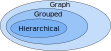

Reconciliation of structured time series forecasts with graphs
27th June 2023 @ ISF 2023
Mitchell O’Hara-Wild, Monash University
Supervised by Rob Hyndman and George Athanasopolous


Reconciliation of structured time series forecasts with graphs
27th June 2023 @ ISF 2023
Mitchell O’Hara-Wild, Monash University
Supervised by Rob Hyndman and George Athanasopolous
The basics of reconciliation
How many forecasters will attend ISF 2024 and beyond?
Forecast \(\text{Attendees}_{T+h|T}\) with a suitable model and data.
How many attendees are from academia and industry?
Forecast \(\text{Academic}_{T+h|T}\) and \(\text{Industry}_{T+h|T}\) with
suitable models and data.
Something doesn’t add up here…
Independently produced forecasts are incoherent,
\(\text{Attendees}_{T+h|T} \neq \text{Academic}_{T+h|T} + \text{Industry}_{T+h|T}\).

The basics of reconciliation
Impose constraints to ensure coherency
Adjust the forecasts to satisfy the constraint
\(\text{Attendees}_{T+h|T} = \text{Academic}_{T+h|T} + \text{Industry}_{T+h|T}\).
Often we have many constraints, so matrices are used:
\[ \begin{bmatrix} \text{Attendees}_{t} \\ \text{Academic}_{t} \\ \text{Industry}_{t} \\ \end{bmatrix} = \begin{bmatrix} 1 & 1 \\ 1 & 0\\ 0 & 1 \\ \end{bmatrix} \begin{bmatrix} \text{Academic}_{t} \\ \text{Industry}_{t} \\ \end{bmatrix} \]
or compactly,
\[\mathbf{y}_t = \mathbf{S} \mathbf{b}_t\]
The basics of reconciliation
Impose constraints to ensure coherency
These matrices are not easy to read, so we use graphs.
The weight of the edges corresponds to the \(\mathbf{S}\) matrix.
The basics of reconciliation
Reconciling forecasts
There are many ways to adjust the forecasts to be coherent, such as MinT (Wickramasuriya, Athanasopoulos, and Hyndman 2018):
\[ \tilde{\mathbf{y}}_{T+h|T}=\mathbf{S}(\mathbf{S}'\mathbf{W}_{h}^{-1}\mathbf{S})^{-1}\mathbf{S}'\mathbf{W}_{h}^{-1}\hat{\mathbf{y}}_{T+h|T}. \]
where \(\mathbf{W}_{h}=\text{Var}[(\mathbf{y}_{t+h|t}-\hat{\mathbf{y}}_{t+h|t})]\)
There are many reconciliation techniques and formulations that work well.
The basics of reconciliation
Reconciling forecasts
Not only are coherent forecasts more reasonable, they are more accurate!
The large matrices can become complicated quickly when considering large collections of coherent time series.
Lets instead consider graphs.
Recap
Coherence and graph theory
- Hierarchical coherence is a polytree.
- Grouped coherence is a restricted DAG.
- Graph coherence is an unrestricted DAG.
DAGs are a useful tool for representing structured time series and producing coherent forecasts.


What else?
Other benefits
- Access to efficient graph algorithms
- Visualisation of structured time series
- Familiar computing grammar for coherent data
Future work
- Integrate graph reconciliation into fable
- Explore relationship between graph coherency and general linearly constrained time series (Girolimetto and Fonzo 2023)
- Investigate alternative graph reconciliation methods
Thanks for your time!
This is a student presentation, please rate it!
Scan the QR (or go to the Whova app) and click on “Rate Session”